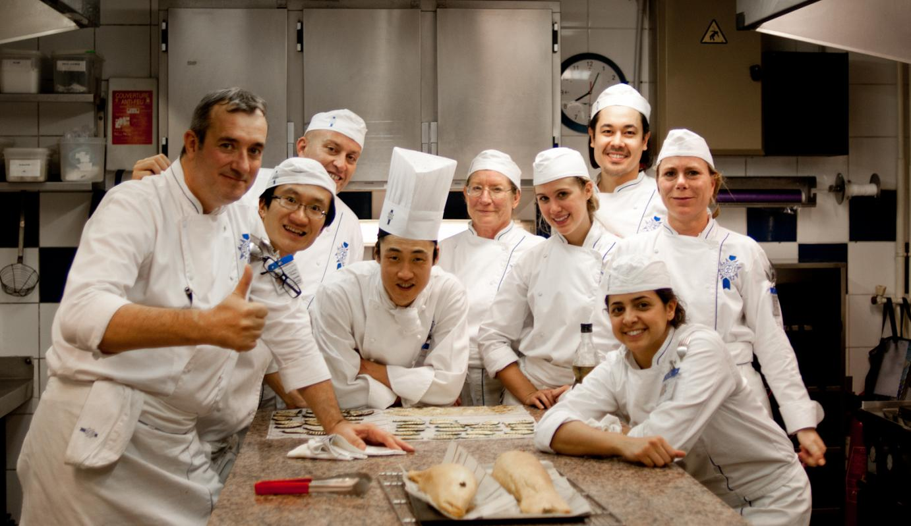

En la gestión de restaurantes
el equipo humano es el factor más importante. Un
negocio de restauración puede contar con una gran inversión económica,
sin embargo, el éxito vendrá si tiene las personas adecuadas para
llevarlo adelante. Lo decía Martín Berasategui, chef vasco a la cabeza
del mejor restaurante del mundo según los Travellers’Choice de
TripAdvisor:
Nosotros

Tenemos al mejor equipo de trabajo, nuestra union y compromiso es como el de una familia
tenemos metas y compromisos para que el cliente que entre a nuestro negocio se sienta satisfecho
y en familia con chabelo.
Puedes conocer nuestro equipo en sucursal, pero aqui los nombres de nuestros exitosos trabajodores. Wacalupe la cosinera estrella. Wandajalaupe la ayudante de cosinera, cuata de la wacalupe. Pistian el famoso cantinero por sus margaritas magicas. Urbanos Personal de seguridad que al que se pone regego le truena bombas. Mayris y Patis nuestras sexys y amigables meseras. Fabio y Kebin nuestros fuertes meseros que te ayudaran con todo. Migue Sacaborrachos.